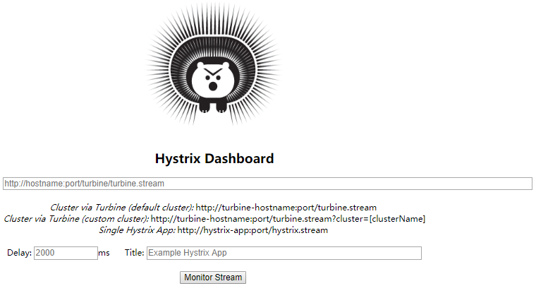
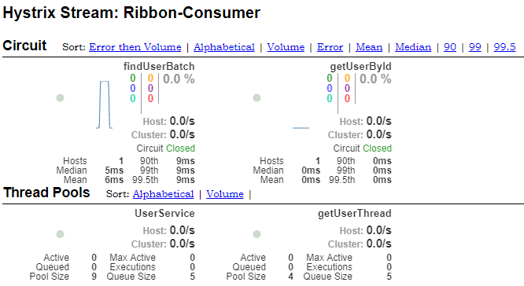
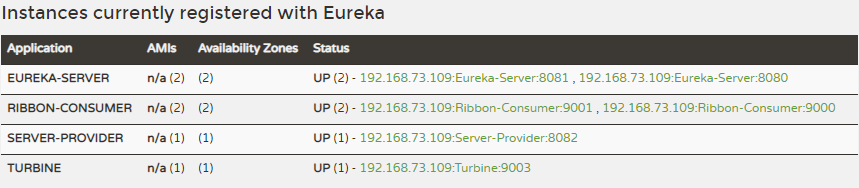
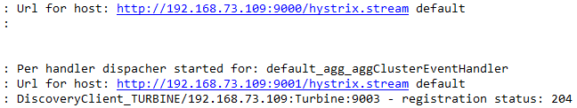
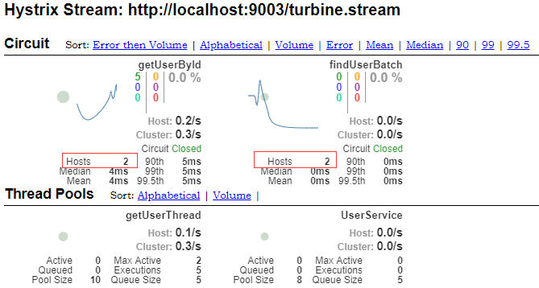
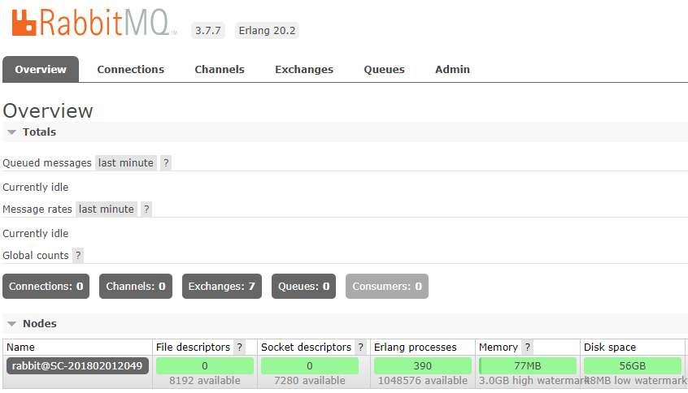
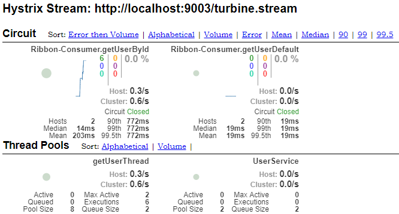
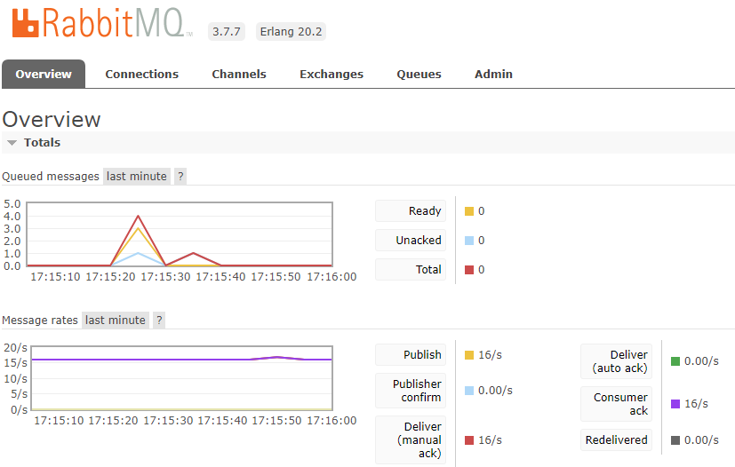

Hystrix提供了Hystrix Dashboard来实时监控Hystrix的运行情况，通过Hystrix Dashboard反馈的实时信息，可以帮助我们快速发现系统中存在的问题，从而及时地采取应对措施。Spring Cloud对Hystrix Dashboard进行了整合，这里将介绍如何使用Hystrix Dashboard监控单个和多个Hystrix实例。
监控单个Hystrix实例
创建一个Spring Boot项目，Spring Boot版本为1.5.13.RELEASE，artifactId填Hystrix-Dashboard，然后引入如下依赖：
1 | <dependencyManagement> |
稍微配置下yml：
1 | spring: |
然后在入口类上加入注解@EnableHystrixDashboard来启用Hystrix Dashboard的功能。启动项目访问http://localhost:9002/hystrix就可以看到如下页面了：

可以看到页面上提供了三种监控的模式：Cluster via Turbine(default cluster)、Cluster via Turbine(custom cluster)和Single Hystrix App：
前两种都是集群监控的，下面再介绍，这里先介绍第三种单机监控。
在上一节Spring Cloud Hystrix服务容错的基础上，要对Ribbon-Consumer进行监控还必须加入spring-boot-starter-actuator依赖，然后分别启动Eureka-Serve集群，Eureka-Client，Ribbon-Consumer，启动后在刚刚的监控页面上输入：http://localhost:9000/hystrix.stream ，然后往Ribbon-Consumer发几条请求，便可以看到如下监控页面：

至于这张图上面的指标代表什么含义，我们可以参考官方给的图例：

到这里我们已经实现了使用Hystrix Dashboard对单个Hystrix实例进行监控了，然而实际中一般会有多个Hystrix实例需要同时进行监控，下面我们使用Turbine来实现集群监控。
Turbine集群监控
使用Turbine实现对Hystrix的集群监控的思路是：Turbine从Eureka服务注册中心通过服务名Ribbon-Consumer获取服务实例，然后Hystrix Dashboard对Turbine进行监控，这样就实现了Hystrix Dashboard同时对多个Hystrix（Ribbon-consumer）实例同时进行监控的功能。
创建一个Spring Boot项目，Spring Boot版本为1.5.13.RELEASE，artifactId填Turbine，然后引入如下依赖：
1 | <dependencyManagement> |
然后在入口类中加入@EnableTurbine来开启Turbine的功能，并且加入@EnableDiscoveryClient注解，开启服务获取功能。
最后在yml中加入一些配置：
1 | spring: |
上面配置了Eureka-Server的集群地址，并且指定了端口号为9003，应用名称为Turbine。剩下的配置为Turbine的配置，含义如下：
turbine.app-config指定了需要收集监控信息的服务名，这里为Ribbon-Consumer；turbine.cluster-name-expression参数指定了集群名称为default, 当服务数量非常多的时候，可以启动多个Turbine 服务来构建不同的聚合集群， 而该参数可以用来区分这些不同的聚合集群，同时该参数值可以在Hystrix仪表盘中用来定位不同的聚合集群，只需在Hystrix Stream的URL中通过cluster参数来指定(即Cluster via Turbine(custom cluster))；turbine.combine-host-port参数设置为七rue, 可以让同一主机上的服务通过主机名与端口号的组合来进行区分， 默认情况下会以host来区分不同的服务，这会使得在本地调试的时候，本机上的不同服务聚合成一个服务来统计。
配置完毕后，我们分别启动下面这些服务：
启动Eureka-Server集群，端口号为8080和8081；
启动一个Eureka-Client，端口号为8082；
启动两个Ribbon-Consumer，端口号为9000和9001；
启动Turbine服务，端口号为9003；
最后启动Hystrix-Dashboard服务，端口号为9002。
启动好这些服务后，访问Eureka-server的http://localhost:8080可看到这些实例：

说明服务都已启动成功，我们观察Turbine的控制台，可以看到如下日志信息：

即Turbine已经从服务注册中心找到了9000和9001端口的Ribbon-Consumer实例。
这时候我们访问Hystrix-dashboard的地址http://localhost:9002/hystrix，在页面的地址栏输入http://localhost:9003/turbine.stream，然后分别往9000和9001端口的Ribbon-Consumer实例发送一些请求，这时候可以看到Dashboard的画面如下：

可以看到Hosts的值已经是2了，并且由于两个Hystrix实例的名称都是Ribbon-Consumer，所以Turbine 会将相同名称的服务作为整体来看待，汇总成一个监控图。
使用消息中间件
除了直接用Turbine从服务注册中心获取Ribbon-Consumer实例监控数据外，还可以将Ribbon-Consumer的监控数据发送到消息中间件，然后Turbine从消息中间件中获取。这里我们选择RabbitMQ作为消息中间件。
在安装RabbitMQ之前，需要先安装Erlang/OTP，下载地址为：http://www.erlang.org/downloads/，下载exe文件安装即可。
安装完毕后，下载RabbitMQ，下载地址为http://www.rabbitmq.com/install-windows.html，下载exe文件安装即可。
安装完RabbitMQ之后，我们到RabbitMQ安装目录的sbin下执行如下命令：
1 | rabbitmq-plugins enable rabbitmq_management |
然后在浏览器中输入http://localhost:15672，用户名和密码都是guest，登录后可看到：

说明启动成功。
接下来我们对Ribbon-Consumer进行改造，实现其将监控信息输出到RabbitMQ，在pom中添加如下依赖：
1 | <dependency> |
修改Ribbon-Consumer的yml配置文件，加入RabbitMQ的连接配置：
1 | spring: |
最后我们来修改Turbine，让其从RabbitMQ中读取监控信息。在Turbine项目中引入如下依赖：
1 | <dependency> |
同时删除spring-cloud-starter-eureka和spring-cloud-starter-turbine依赖，因为我们不再从服务注册中心去获取监控的服务信息了，并且spring-cloud-starter-turbine-stream已经包含了spring-cloud-starter-turbine依赖。
修改Turbine的入口类，删除@EnableTurbine和@EnableDiscoveryClient注解，添加@EnableTurbineStream注解。
将Turbine的yml配置修改为：
1 | spring: |
修改完毕后，我们分别启动下面这些服务：
启动Eureka-Server集群，端口号为8080和8081；
启动一个Eureka-Client，端口号为8082；
启动两个Ribbon-Consumer，端口号为9000和9001；
启动Turbine服务，端口号为9003；
最后启动Hystrix-Dashboard服务，端口号为9002。
同样的我们访问Hystrix-dashboard的地址http://localhost:9002/hystrix，在页面的地址栏输入http://localhost:9003/turbine.stream，然后分别往9000和9001端口的Ribbon-Consumer实例发送一些请求，这时候可以看到Dashboard的画面如下：

效果和从服务注册中心获取服务的监控信息一致。并且这时候观察RabbitMQ的页面：

可看到Queued messages已经有数据了。
至此我们完成了Turbine从消息中间件RabbitMQ来收集监控信息的过程。